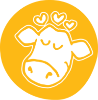

Bewuste ingredienten
Onze ingrediënten ondersteunen positieve verandering en laten ons ijs fairrukkelijk smaken!
Onze productieGeïnspireerd door onze vrienden bij Tony's Chocolonely, hebben we een ijssmaak gemaakt om te vieren dat we bij hun missie aansluiten; een missie om een einde te maken aan moderne slavernij in de cacaoteelt.
Lees meer
Onze ingrediënten ondersteunen positieve verandering en laten ons ijs fairrukkelijk smaken!
Onze productie
We streven ernaar om welvaart te creëren voor iedereen die met ons bedrijf verbonden is.
Onze waarden & missie
We willen zichtbaarheid en support geven aan de onderwerpen waar wij zelf in geloven
Onderwerpen die ons bezig houdenEr zijn zoveel manieren om van Ben & Jerry's te genieten. En met al onze smaken, is er voor iedereen wat wils.